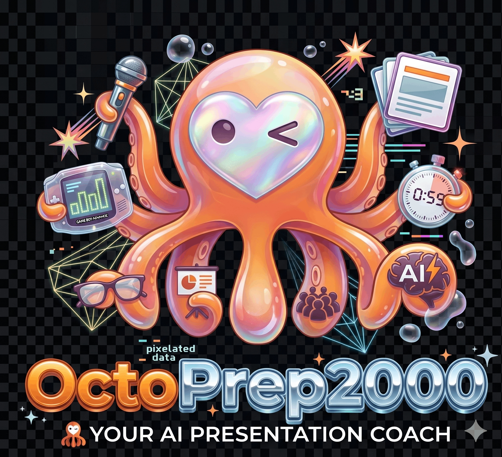
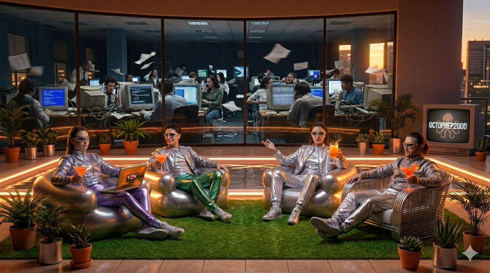

Score ≥80 on either path? 🎓 Unlock a real 1-on-1 with a Tikal Mentor — the payoff, not a separate user.

flowchart LR
U(["👤 Presenter opens the dashboard"]) --> F["📝 Fills in the form
topic · audience · upload deck"]
F --> GS(["🚀 Click 'Get Started'"])
GS --> P["🎥 Browser asks mic + camera permission
sees a live self-preview"]
P --> SR(["⏺️ Click 'Start Recording'"])
SR --> REC["🔴 Recording begins"]
REC -.->|"stretch goal"| TOGGLE["🔔 Optional toggle: live feedback ON/OFF
body language · pacing · eye contact"]
class U sky
class F,P amber
class GS,SR green
class REC red
class TOGGLE violet
{
"overall_score": 74,
"voice_score": 68,
"body_score": 71,
"slide_score": 82,
"content_score": 75,
"mentor_unlocked": false,
"insights": [{
"category": "voice",
"type": "IMPROVEMENT",
"message": "Said 'um' 24×",
"timestamps": [72000,225000]
}]
}
8 of 12 Tikal factors checked automatically today.
Today it only flags what's wrong. The goal: it should also say what it would do instead — not just "too many elements," but a real suggested fix.
flowchart LR
subgraph SRC["🔎 What it reads"]
direction TB
DOC["📚 Official docs
for the tech you named"]
WEB["🌐 Web search
similar talks & articles"]
end
DOC --> CA(["🧠 Content Agent"])
WEB --> CA
CA --> T["⚠️ Technical correctness"]
CA --> A["🎯 Depth fits the audience"]
CA --> G["📋 Gaps vs. the docs"]
T --> OUT(["🗂️ Per-slide + overall summary"])
A --> OUT
G --> OUT
class DOC,WEB sky
class CA violet
class T,A,G amber
class OUT green
style SRC fill:#0b1120,stroke:#38bdf8,color:#7dd3fc
| Layer | Technology | Purpose |
|---|---|---|
| Frontend | TanStack Start · React · TypeScript | SSR/SPA app, webcam + mic capture, scorecard |
| UI Components | Tailwind CSS (installed, barely used) + component lib TBD | e.g. Radix UI, shadcn/ui — dev's call |
| Backend | FastAPI · Python 3.11+ · async | REST + WebSocket, single process |
| Orchestration | Raw asyncio (Agno PoC not adopted here) | Spawns/cancels agent tasks per session |
| Vision AI | GPT-4o Vision + Google Cloud Vision, via Tikal LiteLLM | GPT-4o: posture · gestures · framing — GCV: eye contact · face detect |
| LLM agents | Tikal LiteLLM gateway | PPTX · Content analysis |
| STT | ElevenLabs Scribe v1 | Live transcription · filler · WPM |
| Frame filter | imagehash dhash | 60fps → ≤5fps, drop duplicate frames |
| PPTX | python-pptx | Slide text extraction |
| Data | PostgreSQL 15 · SQLAlchemy async · asyncpg · Alembic | 6 tables, migrations |
| Monorepo | pnpm workspaces + uv | JS + Python packages |
graph LR
presenter(["👤 Presenter
uploads deck · rehearses live"])
subgraph sys["🐙 OctoPrep2000"]
core["Analyses voice, body,
slides & content in real time"]
end
vision(["🤖 GPT-4o Vision + Google Cloud Vision
via Tikal LiteLLM
posture · gestures (GPT-4o)
eye contact · face detect (GCV)"])
stt(["🎙️ ElevenLabs Scribe v1
speech-to-text"])
cal(["📅 Calendly
deep-link only, read-only
unlocked at score ≥80"])
presenter -->|"uploads deck · streams audio/video"| core
core -->|"scored, timestamp-anchored report"| presenter
core -->|"video frames"| vision
vision -->|"posture/gesture findings"| core
core -->|"audio chunks"| stt
stt -->|"transcript + filler/WPM"| core
core -.->|"deep-link redirect"| cal
class presenter sky
class core green
class vision,stt,cal violet
style sys fill:#0b1120,stroke:#4ade80,color:#86efac
graph TB
user(["👤 Presenter · Browser"])
subgraph rail["🐙 OctoPrep2000"]
fe["🖥️ Web Dashboard
SSR · webcam + mic capture"]
be["⚡ Backend
single process · all agents
REST + WebSocket"]
pg[("🐘 Database
6 tables")]
end
vision(["🤖 Vision LLM API"])
stt(["🎙️ STT Provider"])
user -->|"HTTPS · serves pages"| fe
fe -->|"REST · /sessions · /upload"| be
fe -->|"WSS · video + audio in"| be
fe -->|"WSS · realtime-feedback out"| be
be -->|"reads/writes"| pg
be -->|"REST · frame batches"| vision
be -->|"WSS · audio chunks"| stt
class user,fe,be sky
class pg violet
class vision,stt amber
style rail fill:#0f172a,stroke:#334155,color:#94a3b8
graph LR
subgraph Routes["🌐 Routes"]
direction TB
SR[SessionRouter]; UR[UploadRouter]; VW[VideoWS]; AW[AudioWS]; FW[FeedbackWS]
end
subgraph Core["⚙️ Core"]
direction TB
SM[SessionManager]; BC[Broadcaster]
end
subgraph Orch["🧠 Orchestrator"]
AG[Orchestrator
sole DB writer]
end
subgraph Agents["🤖 Agents · async tasks"]
direction TB
FS[FrameService]; VA[VisionAgent]; AA[AudioAgent]
PA[PPTXAgent]; CA[ContentAgent]; RA[ReportAgent]
end
subgraph Data["💾 Data"]
RP[Repository]; DB[(PostgreSQL)]
end
SR --> SM --> AG
UR --> PA
VW --> AG
AW --> AG
FW --> BC
AG --> FS --> VA
AG --> AA
VA -->|emit payload| AG
AA -->|emit payload| AG
PA -->|emit payload| AG
CA -->|emit payload| AG
RA -->|emit payload| AG
AG --> BC
AG -->|validate + persist| RP --> DB
RA -.->|read-only| RP
CA -.->|read-only| RP
class SR,UR,VW,AW,FW sky
class SM,BC green
class AG violet
class FS,VA,AA,PA,CA,RA amber
class RP,DB violet
style Routes fill:#0b1120,stroke:#38bdf8,color:#7dd3fc
style Core fill:#0b1120,stroke:#4ade80,color:#86efac
style Orch fill:#0b1120,stroke:#a78bfa,color:#c4b5fd
style Agents fill:#0b1120,stroke:#fbbf24,color:#fcd34d
style Data fill:#0b1120,stroke:#a78bfa,color:#c4b5fd
| Agent | Phase | Model / Service | Emits |
|---|---|---|---|
| Frame Service | P1 | imagehash dhash (algorithmic) | filtered frame stream |
| Audio Agent | P1 | ElevenLabs Scribe v1 | Transcript + AudioWarning |
| Vision Agent | P2 | GPT-4o Vision (LiteLLM) | VideoEvent |
| PPTX Agent | P1 | LiteLLM · 12-factor Playbook | SlideAnalysis[] |
| Content Agent | P2 | LiteLLM · reads transcript | ContentAnalysis |
| Report Agent | P1/P2 | LiteLLM · reads all events | Report (4 vectors) |
Golden rule: agents are pure AI logic — they emit typed Pydantic payloads to the Orchestrator and never touch the DB. Orchestrator is the sole writer; Report + Content agents get read-only access for aggregation.
| Member | Role | Primary Service |
|---|---|---|
| 🧭 Team Lead | Product, Integration, Architecture | Cross-cutting |
| 🎥 Naor | Full Video Pipeline | Algorithmic Frame Service + Vision Agent |
| 🎙️ Or Yam | Audio Agent | Live audio streaming, speech-to-text, filler word detection, speaking pace (words per minute) |
| 🧠 Din | Content Analysis Agent | Post-session transcript accuracy + coverage gaps |
| 🖼️ Stav | PPTX Agent | Slide analysis vs Tikal 12-factor Playbook |
| ⚙️ Avner | Orchestrator + Report Agent | Orchestrator + Report Generator |
| 🖥️ Ortal | Frontend Dashboard | TanStack Start dashboard; Chrome Extension stretch |
| ✍️ Lihi | Content & Frontend (Backup) | Hackathon pitch deck + LinkedIn/social content; frontend backup |
erDiagram
sessions {
uuid session_id PK
uuid access_token
text topic
text status
boolean pptx_ready
jsonb slides_raw_text
}
transcript_entries {
serial id PK
uuid session_id FK
int start_ms
int end_ms
text text
text_array filler_flags
}
video_events {
serial id PK
uuid session_id FK
int timestamp_ms
text event_type
text severity
}
slide_analyses {
serial id PK
uuid session_id FK
int slide_index
int playbook_factor
text finding_type
}
reports {
serial id PK
uuid session_id FK
numeric overall_score
jsonb insights
boolean mentor_unlocked
uuid share_token
}
sessions ||--o{ transcript_entries : "has"
sessions ||--o{ video_events : "has"
sessions ||--o{ slide_analyses : "has"
sessions ||--|| reports : "produces"
graph LR
P1["🟢 Phase 1 · first 2h
PPTX upload + slide analysis
audio STT + filler/WPM
simple report
WS infra built"]
P2["🟡 Phase 2 · 2-3h
Vision agent (body/eyes)
Content accuracy agent
4-vector scorecard
lock/unlock ≥80"]
P3["🔵 Phase 3 · bonus
live toasts + toggle
Railway deploy
Chrome extension
PDF export"]
P1 --> P2 --> P3
style P1 fill:#14532d,stroke:#4ade80,color:#dcfce7
style P2 fill:#78350f,stroke:#fbbf24,color:#fef3c7
style P3 fill:#0c4a6e,stroke:#38bdf8,color:#e0f2fe
Phase 1 alone is a demo. WebSocket infra is built in P1 so live feedback switches on in P3 without rearchitecting. If the day runs short, P1 ships a working product.
| Status | Pattern | In our repo |
|---|---|---|
| ✅ | Multi-agent workflow | 5 fixed-role agents · sequential, not reactive |
| ✅ | Guardrails | Pydantic schemas at every agent boundary + session auth token (schemas.py, session_auth.py) |
| ✅ | Optimization | 1fps Vision cap · 3-frame GPT-4o batches · frame dedup (vision_agent.py) |
| ❓ | Tool calls | No agent has real tools — worth it for the Content Agent? |
| ❓ | RAG / vector DB | Playbook is a hardcoded string (pptx_agent.py) — relevant if it grows |
| ❓ | Memory | Every LLM call is stateless (runtime.py) — worth it for cross-slide PPTX scoring? |
| ❓ | Human-in-the-loop | Mentor unlock is fully automatic (mentor_unlocked) — should it be? |
| ❓ | One gateway, two calling styles | vision_agent.py calls the LLM client directly · content_agent.py/pptx_agent.py go through agno's Agent — unify? |
| ❓ | Leftover orchestrator code | register_task has no callers · sessions.py & upload.py each spin up a throwaway Orchestrator() |
| ❓ | Cost ceiling | Unknown — any cap on session length or LLM spend? |
Go open the files. Bring back what you find.
🌱 Day one. Rough as it gets — but we've got this.